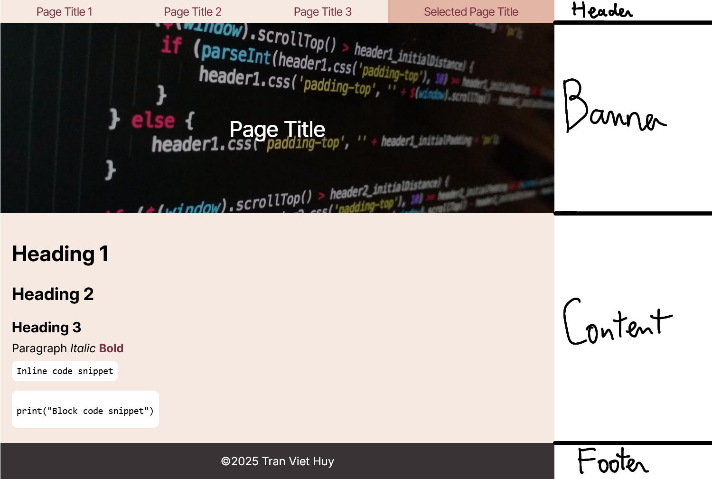
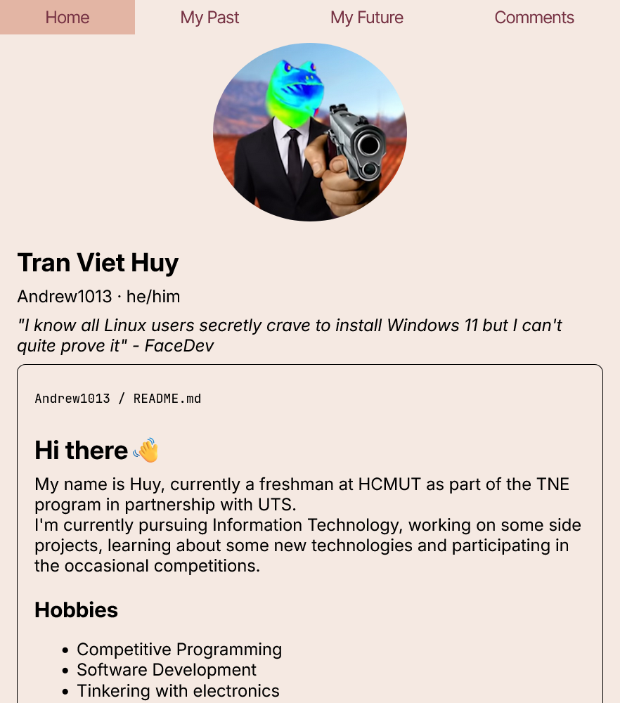
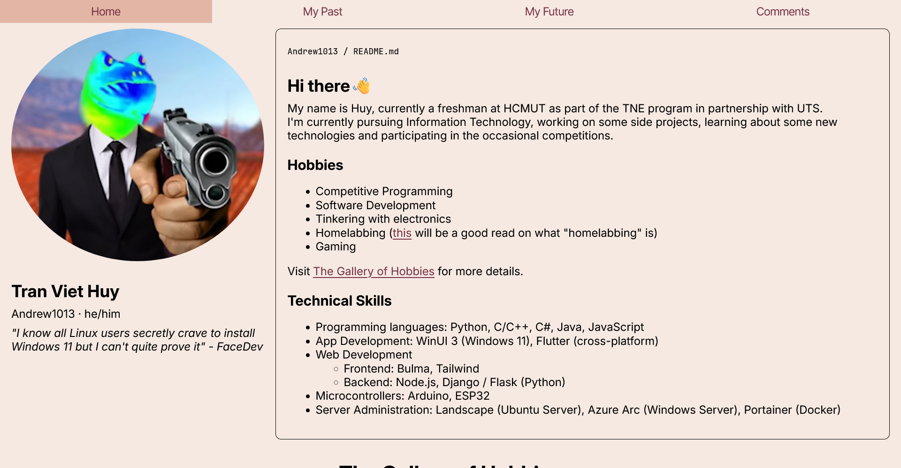
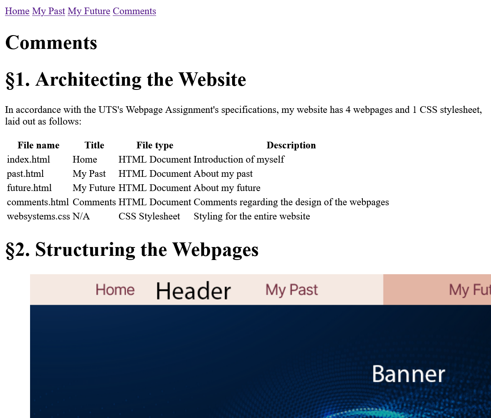

§1. Architecting the Website
In accordance with the UTS's Webpage Assignment's specifications, my website has 4 webpages and 1 CSS stylesheet, laid out as follows:
| File name | Title | File type | Description |
|---|---|---|---|
| index.html | Home | HTML Document | Introduction of myself |
| past.html | My Past | HTML Document | About my past |
| future.html | My Future | HTML Document | About my future |
| comments.html | Comments | HTML Document | Comments regarding the design of the webpages |
| websystems.css | N/A | CSS Stylesheet | Styling for the entire website |
§2. Structuring the Webpages

a. HTML structure
<!DOCTYPE html>: Defines the document type (HTML5 Document), ensuring compliance with the HTML specification when rendering on a browser.
<html>:
Denotes the beginning and the end of the HTML document.
<head>:
Contains relevant metadata about the document, such as character set, viewport settings, page information and linking to external resources such as CSS stylesheets and JS scripts (not used for this assignment).
This section also contains the <title> element, which provide the title of the page that is shown in the browser's tab preview.
<body>:
Contains the actual contents of the document, namely what will be rendered on the browser's page area.
In this document, the content is divided into 3 main areas: header, main and footer.
<header>:
Typically represent a container for introductory content, such as logos, titles and navigation.
In this case, this element holds a persistent navigation bar for easy navigation between pages.
Note: Definition is semantic, no real effect on existing styling
<nav>:
Represents a section of the page used for providing navigation controls throughout the website.
In this case, this element serves as a persistent navigation bar, with <a> anchors to provide a method of moving between pages.
Note: This tag is semantic; it provides meaning, not visual style.
<main>:
Represents the dominant content of the page, consisting of content that is either directly related or expands upon the central focus on the page.
Note: This tag is semantic; it provides meaning, not visual style.
<div class="banner">:
The banner sitting on top of the main content area, only used for My Past, My Future and Comments pages.
<div class="page">:
The main content area of the page. There exists two different "page" definitions in regards to the webpages:
- Common for all page elements: vertical padding of 0.5rem, horizontal padding of 1rem.
- My Past, My Future and Comments pages: a max width of 768px.
<section>:
Represents a "section" of a document, mainly as means of separation and organization of contents on the page.
Note: This tag is semantic; it provides meaning, not visual style.
<footer>:
Typically contains the author, copyright information and links to other less important pages for the entire website.
In this case, this element holds a copyright statement and the assignment for which this website was made as a submission to.
Note: This tag is semantic; it provides meaning, not visual style.
The HTML document also makes heavy use of classes (e.g. .columns-2 and .gallery) in various <div> elements to apply custom style sets and structure the content as necessary.
These classes are referenced in the external CSS stylesheet "websystems.css".
b. CSS structure
| Selector | Selector type | Description | Scope |
|---|---|---|---|
| Global | |||
:root |
Pseudo-class | Defines global variables for the site's color palette | Global |
@font-face |
At-rule | Imports custom font files into the page | Global |
@media |
At-rule | A media query that groups all styles needed for tablet-sized screens | Global |
| General | |||
body |
Element | Sets the global font, margins and page color | Global |
.page |
Class | Applies universal padding to the main content wrapper | Global |
figcaption |
Element | Formatting for figure captions | Global |
footer, footer > p |
Element / Child combinator | Formatting for the footer and the text within | Global |
code, pre |
Element / Descendant | Formatting for inline and block code snippets | Global |
a, b, p, q |
Element | Sets base color for anchor and bold text, default margins of paragraphs and formatting for quotations | Global |
h1, h2, h3 |
Element / Group | Applies consistent font size and top margins for all heading levels | Global |
table, th, td |
Element / Group | Sets border style, behaviour and padding for all table elements | Global |
img |
Element | Formatting for how images appear on webpages | Global |
| Custom elements | |||
nav, nav a, nav .selected |
Element / Descendant / Class | Builds the navigation bar, styles links and highlights the selected page | Global |
.banner, .banner h1 |
Class / Element / Descendant | Base styles for page banners and page title | past.html, future.html, comments.html |
.past-banner, .future-banner, .comments-banner |
Class | Applies specific background images to the appropriate banner | past.html, future.html, comments.html |
.profile, .profile .sidebar, .profile .readme |
Class / Descendant | GitHub inspired profile layout (sidebar and README) | index.html |
.gallery .container |
Class / Descendant | Create a 2-column, dynamic layout for the gallery component container | index.html |
.gallery .container figure |
Class / Descendant | Ensure each figure (image / code) displays correctly as a block element | index.html |
.timeline |
Class | Component container, acts as an anchor for other elements | past.html |
.timeline::before |
Pseudo-element | Draws the line | past.html |
.timeline .card .heading .trigger |
Class / Descendant | Styles the circular dot and align it to the line | past.html |
.columns-2, .columns-3 |
Class | Utility classes for 2-column and 3-column content blocks | future.html, comments.html |
.palette |
Class | Styles the 4-column color palette | comments.html |
§3. Aesthetics
a. Layout & Effect
This website's layout is designed to be clean, readable and modern, resembling those of Markdown documents like those you have seen in README files.
On the main content pages "My Past", "My Future" and "Comments", the main content area .page is constrained to a max-width of 768px, and centered in relation to the body.
The result is a page that looks and feels like a document, while preventing lines of text from running too long, potentially straining the viewer's eyes.
To achieve such a feat, while also integrating various custom elements the Markdown format doesn't natively support, modern CSS techniques are used for layout:
- Flexbox: Used to create dynamically adjustable columns / rows. The
navbar is a great demonstrator for such a capability, dividing each element evenly across the entire width. - CSS Columns: Used to create dynamic, magazine-style layouts. The utlity class
.columns-2is a great demonstrator of this technique.
b. Design
The website's design is built on the simple, high-contrast 4 colors palette shown in Figure 2 below.
This palette is defined in the :root element of the stylesheet for easier usage and formatting across webpages.
#773344
Wine
#E3B5A4
Pale Dogwood
#F5E9E2
Linen
Another key design element can be found in the banners at the top of the content pages. A semi-transparent dark gradient set at 35% transparency is layered on top of the background image of each banner. This technique increases contrast and readability between the white page title and the banner's background image, no matter what image is used.
c. Typography
This website uses 3 fonts for various purposes:
| Font name | Font type | Purpose in the design |
|---|---|---|
| Inter | Sans Serif | General text contents |
| Inter Tight | Sans Serif | UI elements (navigation bar,...) |
| JetBrains Mono | Monospaced | Code snippets |
§4. Addressing Accessibility
a. Responsive Design
The website is fully responsive and designed to work on all screen sizes.
This is achieved by including the <meta name="viewport"> tag in the <head> of every page, telling mobile browsers to render at their device's actual width.
As shown in Figure 3 and 4 below, this approach allows the layout to adapt from a multi-column desktop view (Figure 4) to a clean, single-column mobile view (Figure 3).


b. The alt tag
The alt attribute (alternative text) is a critical accessibility feature used on all <img> tags. Its purpose is to provide a textual description of an image for users who cannot see it, such as those using screen readers. It is also displayed if an image fails to load.
On this website, alt attributes are used to provide specific context for every image, following the principle that alt text should describe the image's purpose.
-
Identity and Context:
On the "Home" page, the profile image's alt text is
A profile picture of Tran Viet Huy...
. On the "My Past" page, images in the timeline are described in context, such asA graduation photo of the Tran Khai Nguyen High School class...
-
Representing Concepts:
On the "My Future" page, images for each aspiration are described, such as
The logo for the ICPC Foundation...
orA flowchart diagram illustrating a roadmap for learning operating system development...
-
Evidence and Diagrams:
On this "Comments" page, all figures have descriptive alt text to explain what they demonstrate, such as
A screenshot of the website's homepage, demonstrating the single-column responsive layout for mobile devices.
c. CSS-Off Accessibility
A key test for accessibility is to disable CSS. This website is built to remain fully functional and readable without any CSS styles applied.
As shown in Figure 5 below, when CSS is turned off, this website is still rendered in a logical, top-to-bottom document flow as intended, ensuring usability for text-only browsers or screen readers.
This is achieved with the use of semantic HTML elements like <header>, <nav>, <main>, <section> and <footer>.

§5. Rounds of Testing
a. Local end-to-end testing
Initial testing was performed locally by opening the index.html file directly in multiple web browsers (Safari, Google Chrome, Mozilla Firefox) across 3 different devices.
This procedure involved:
- Ensuring the navigation bar functions properly (i.e. directing to the correct page when clicked on).
- Scrolling each page to check for layout errors and content overflows
- Resizing the browser windows manually to test responsive breakpoints and ensure all layouts adapted correctly.
- Repeat the above 3 steps over a total of 3 devices (phone, tablet, laptop).
b. Validation
HTML / CSS validators
All HTML files (index.html, past.html, future.html and comments.html) were processed through the W3C Markup Validation Service.
The CSS stylesheet websystems.css was validated with the help of the W3C CSS Validation Service (Jigsaw).
These validation checks verify that the entire site is built with valid and standards-compliant code, essential for cross-browser compatibility.
Accessibility validators
The site was evaluated using browser-based accessibility tools (such as the WAVE Web Accessibility Evaluation Tool). This helped identify and fix potential issues like missing alt text, insufficient color contrast, or an improper heading hierarchy.
EdSTEM submission checker
As a final validation check, the entire project directory was uploaded to the Website Assignment module, where the submission checker was run to minimize penalties and check for correct file paths and proper permission settings.
With an estimated space constraint of approximately 19MB (checked via running df -h on the terminal session), this check also confirms whether the assignment could fit within the space constraints of the hosting server.
c. Live testing: using GitHub Pages
After local testing and validation, the website was deployed to a live server using GitHub Pages. This final step serves as a "live" end-to-end test, confirming that all assets (images, fonts, stylesheets) load correctly over the internet and that the site is accessible to the public.
URL: https://andrew1013-development.github.io/webpage-assignment/
Repository: https://github.com/Andrew1013-development/webpage-assignment
d. What I missed
Even with all the testing and validation, there are some minor issues I still can't fix in time for submission due to time constraints...
-
The CSS Selectors table on the "Comments" page don't fit well on screen widths of 480px and below, requiring the user to scroll horizontally to read the leftmost column.
The minimum width such that the text can fit in my testing is 525px. - Font size doesn't dynamically adjust to fit properly within the screen widths.
- No performance optimization strategy (e.g. lazy loading of images) is used to minimize page loading times and enhance the user experience.
§6. Inspirations, References and Citations
Inspirations
- Abdelmajid Nidnasser's Personal Portfolio: https://nidnasser.me/
- Notion (Markdown formatting): https://www.notion.com/
- GitHub (README formatting): https://github.com/Andrew1013-development
- Markdown Guide: https://www.markdownguide.org/
Tools and technical references
- emn178 - HTML Encoder / Decoder (used for formatting C++ code in HTML)
- MDN Web Docs - Documentation for Web developers
- Google Fonts - Using variable fonts on the web
- Wikipedia - Alt attribute
- BrowserStack - Breakpoints for Responsive Web Design in 2025
External images
- Ho Chi Minh University of Technology - Brand identity (transparent logo)
- Wikipedia - Glen Beck and Betty Snyder program the ENIAC in building 328 at the Ballistic Research Laboratory.jpg
- Freepik - Digital technology wave from connecting dot design, dynamic flowing colorful light
- ICPC Global
- Am I Learning Enough - Advanced Operating System Development Roadmap
- Pixabay - Technology, Computer, Code image
The profile biography is quoted directly from this YouTube video: I made my own Linux Distro (9:23 - 9:28) (FaceDev)
Comments